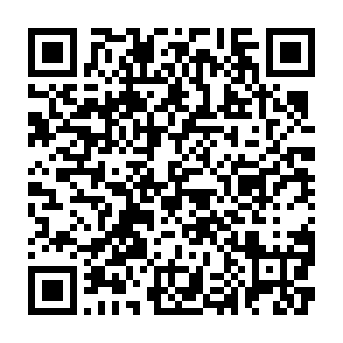

QR에는 CIA 직접 다운로드 링크가 들어 있습니다. 약 70MB입니다.

sdmc:/3ds/dspfirm.cdc는 본인 기기에서 추출해 따로 준비합니다.0004000000DDFB00, 제품 코드는 CTR-P-DLKO, CIA title version은 11입니다. CFW가 설치된 기기 또는 Azahar에서만 설치됩니다. 0.2.7에서 실제 3DS 첫 실행 안내와 게임 진행을 확인했고, 0.2.9의 메뉴 위 검은 선 수정은 실기 확인 대기 중입니다. Azahar에서 처음 브금이 빨라지면 게임별 Audio stretching을 끕니다. 저장 경로는 sdmc:/3ds/data/LovePotion/DDLC-3DS-KO/이고, 업데이트 전에 백업해 두는 편이 안전합니다.